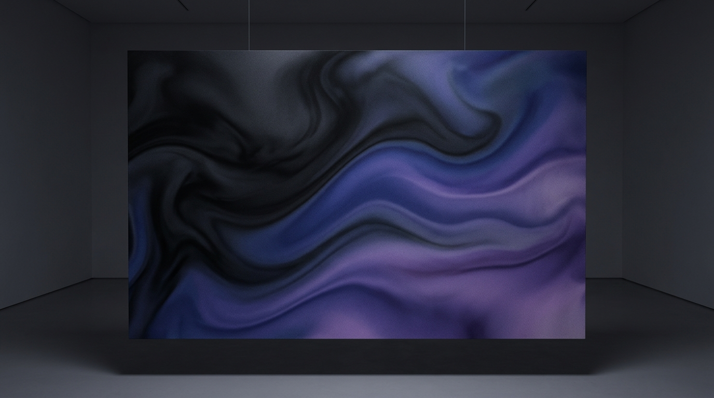

I started out as an architect, and these days I design AI products. I move easily between automation, intelligent systems, and the craft of interface and interaction, bringing the same spatial rigor I learned studying buildings into everything I make now, whether it's software for the AEC industry or software built around AI.
I began in architecture, studying how space, structure, and the way people move through a room shape how we experience the world around us. My background brings a spatial systems thinking to the world of AI and technology.
From there, I found my way into creative technology building XR and AR experiences. I began to combine my expertise in spatial design with interaction design, and AI systems to build intelligent products that actually convert users.
Today, I move between the digital and physical spaces, bringing an architect's understanding of space and structure into AI products, interfaces, and built experiences. I like taking early ideas and turning them into something people can navigate with ease.
Contextual inquiry, stakeholder interviews, diary studies, synthesis frameworks, journey mapping
Small interactions, state management, gesture patterns, motion choreography, and responsive behavior.
Prototyping with code, connecting design and development, computational design, and parametric thinking.
Layouts informed by architecture, along with information architecture, data visualization, and design systems.
From workflow automation and LLM agents to generative design tools for inter-disciplinary teams, I bring intelligent systems and a genuinely human centered craft into one continuous practice.
I visit real people through contextual inquiry, stakeholder interviews, and field observation, because I would rather see where users actually are than trust where assumptions say they should be.
I turn raw research into affinity maps and journey frameworks, distilling it down until it becomes a clear problem the whole team can rally around.
I design interaction first, moving from paper sketches to coded prototypes, testing patterns early and refining the choreography of every state along the way.
I stay close through design QA, pairing with developers, and usability testing after launch, because the work isn't finished at handoff. It's finished when real users validate it.
Visiting buildings, studying spatial sequences, and sketching environments — the foundation for how I think about digital spaces.
Capturing light, composition, and candid moments — a practice that sharpens my eye for visual hierarchy and storytelling.
Tinkering with generative art, parametric tools, and interactive prototypes that blur the line between design and engineering.
Tell me about your project, take a look at pricing, and find a time that works, all in one place. Whether it's an AI product or a build from scratch, let's figure out the shape of it together.
Start a project